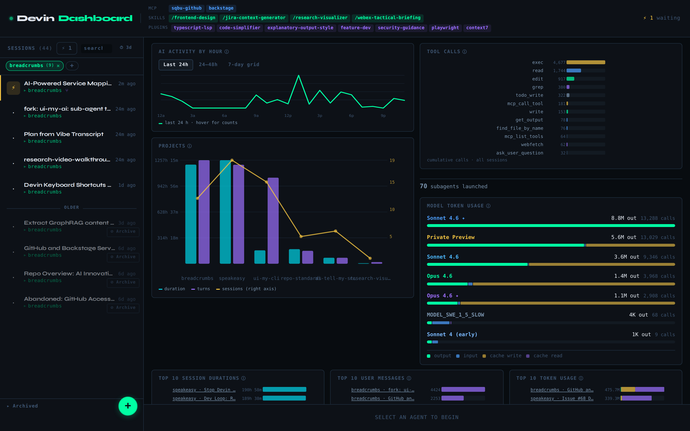
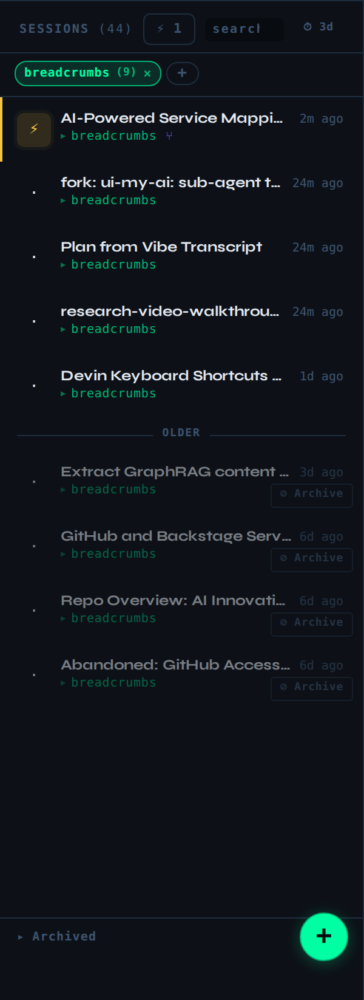
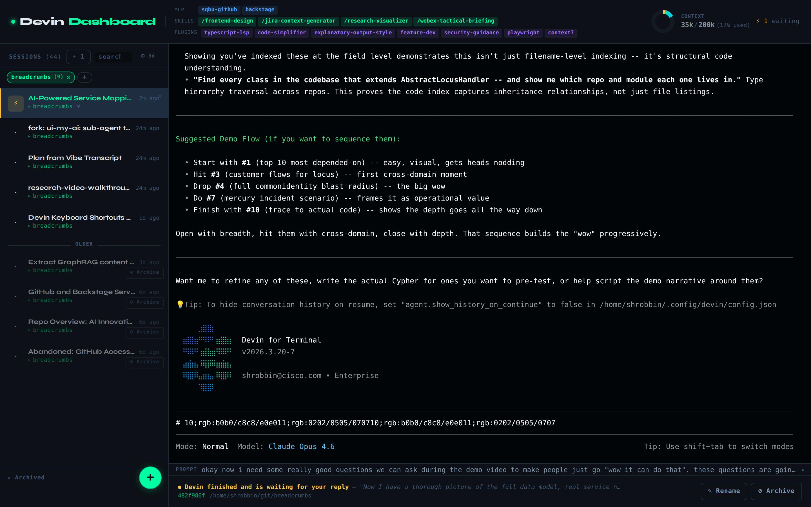
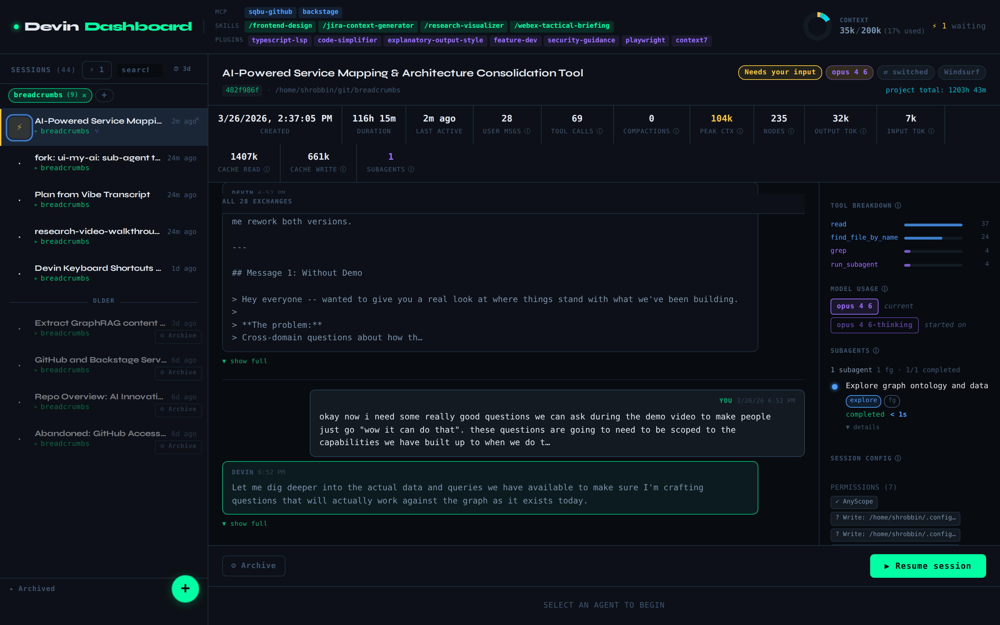
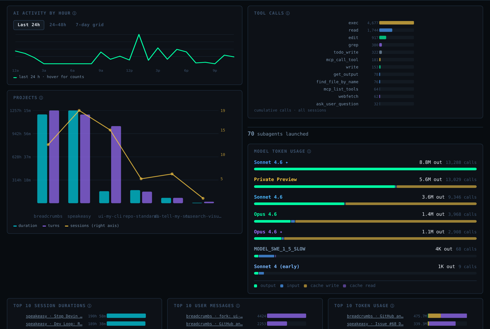
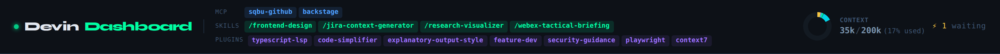
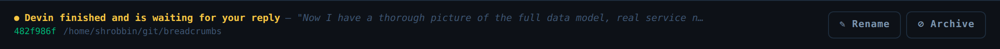
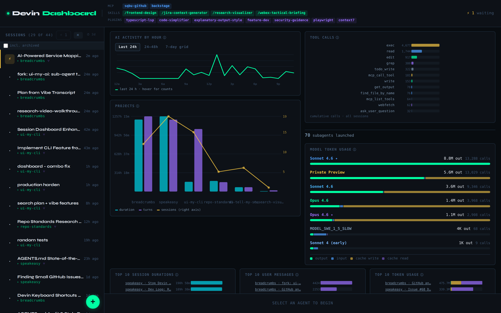
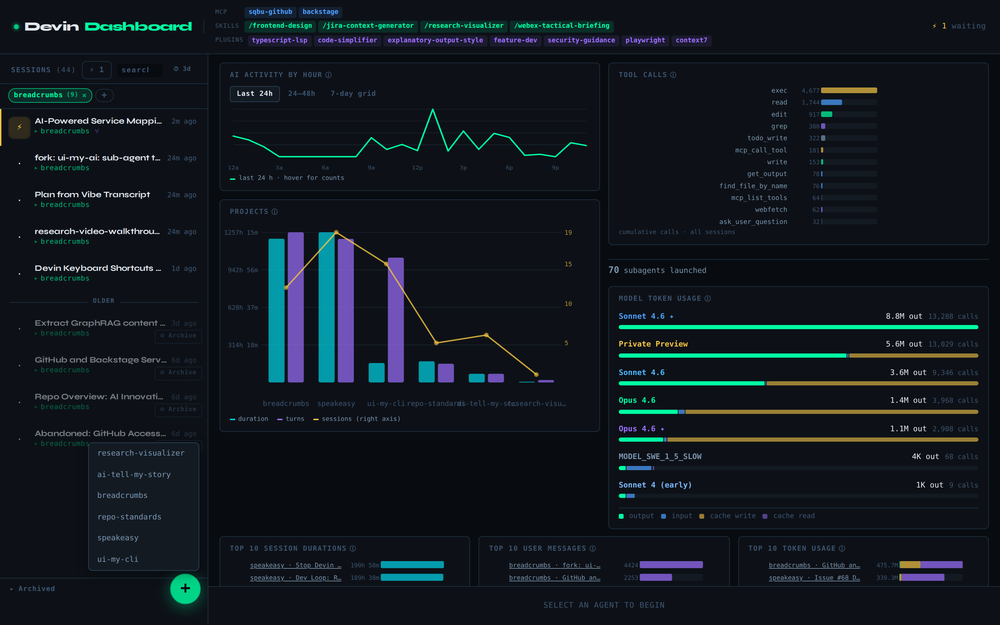

Devin Dashboard
A browser-based command center for managing all your Devin CLI agent sessions in one place. Real terminals, live status, analytics, and one-click switching.
User Guide — v1.001 Quick Start
Get up and running in under five minutes. This section covers the essentials — install, launch, and the core workflow of managing your Devin sessions.
Prerequisites
- Node.js 18+ — check with
node --version - Devin CLI installed and run at least once (creates the sessions database)
- Native build tools for compiling
node-pty:- Ubuntu / Debian / WSL2:
sudo apt install build-essential python3 - macOS:
xcode-select --install
- Ubuntu / Debian / WSL2:
Install & Run
git clone <repo-url> devin-dashboard
cd devin-dashboard
npm install # installs server + client dependencies
npm run build # compile the Vite client bundle
npm start # start the dashboard serverOpen http://localhost:7575 in your browser. That’s it.
npm run pm2:start.
This builds the client and starts the server under PM2 process management.
Your First Look
When you open the dashboard with no session selected, you land on the Analytics Dashboard — a bird’s-eye view of all your Devin activity.

The layout has three permanent areas:
- Sidebar (left) — lists all your Devin sessions with live status icons
- Main area (center/right) — shows either the analytics dashboard, a live terminal, or a session preview
- Control bar (bottom) — shows context about the selected session
Basic Workflow
Here’s the typical daily workflow:
- Scan your sessions — glance at the sidebar for status badges: ⚡ needs you ⚙ running ✓ finished · idle
- Click a session card to open its live terminal — identical to running
devin --resumein your shell - Click the status icon (the colored square on the left of each card) to open a read-only preview without spawning a terminal process
- Click the logo “Devin Dashboard” to return to the analytics home screen
- Click the + button at the bottom of the sidebar to start a new Devin session in any project
02 Interface Overview
The dashboard is a single-page application with no URL-based routing. Everything is controlled by clicking elements on screen. There are three mutually exclusive views in the main area:
| View | Triggered by | What it shows |
|---|---|---|
| Analytics Dashboard | No session selected (home) | Activity charts, project breakdown, tool usage, token stats, leaderboards |
| Live Terminal | Clicking a session card | Full xterm.js terminal connected to a real devin --resume process |
| Session Preview | Clicking the status icon | Read-only conversation history, stats, tool breakdown, subagent timeline |
Additionally, three UI elements are always visible regardless of which view is active:
- Top bar — logo, environment chips (MCP servers, skills, plugins), context window pie chart, waiting-count indicator
- Sidebar — session list with search, filters, and archive drawer
- Control bar — status explanation, session path, and action buttons
03 Sidebar — Session List

Session Cards
Each session appears as a card showing:
- Status icon (left square) — color-coded by status. Clicking this opens the session preview.
- Title — editable by double-clicking. Changes are saved to the Devin CLI database.
- Time ago — when the session was last active (e.g., “2m ago”)
- Project name — derived from the working directory. Shows a ⑂ badge if the session used subagents.
- Archive button — a small “✕” on recent cards, or a prominent “⊘ Archive” button on older cards
Hot / Cold Grouping
Sessions are split into two groups separated by an “older” divider:
- Hot (recent) — sessions active within the last N days
- Cold (older) — sessions past the threshold, shown dimmed with a prominent archive button
The threshold is configurable — click the ⏱ 3d control at the top of the sidebar
to change the number of days. This setting persists in your browser’s localStorage.
Repo Filter Pills
Green pills appear below the search bar, one per project, showing the session count
(e.g., “my-repo (5) ×”). Click a pill to filter the
session list to only that project. Click the + button to add pills for hidden projects.
Active filters persist across page reloads.
Priority Sorting
Within each group (hot/cold), sessions are sorted by priority:
- ⚡ needs you sessions appear first
- ⚙ running sessions next
- Then by most recent activity
04 Live Terminal

devin --resume.Click any session card in the sidebar to open its live terminal. This is identical to
running devin --resume <session-id> in your own terminal — same output, same
scrollback, full bidirectional I/O.
Key Features
- Full terminal emulation — powered by xterm.js with 5,000-line scrollback
- Scrollback preservation — a 256 KB server-side buffer replays terminal history when you switch back to a session
- Multi-tab sharing — multiple browser tabs can view the same session simultaneously and see the same live output
- Auto-reconnect — if the WebSocket connection drops, it reconnects with exponential backoff (500 ms → 8 s). A “Reconnect now” button appears as an overlay.
- Smart Ctrl+C — if you have text selected, Ctrl+C copies to clipboard. Without selection, it sends SIGINT to the running process.
- Auto-resize — the terminal automatically adjusts to fit the available space when you resize your browser window.
Prompt Strip
When a terminal is open, a thin prompt strip appears above the control bar showing the session’s most recent user prompt (or the first prompt if no subsequent ones exist). Long prompts are truncated to one line — click to expand.
05 Session Preview

Click the status icon (the colored square on the left of any session card) to open a read-only preview. This does not spawn a terminal process — it’s a lightweight view of the session’s data.
Header
The preview header shows:
- Session title (double-click to rename)
- Session ID and working directory
- Status badge — color-coded with the current state
- Model badge — which LLM model the session is using
- Backend type badge — e.g., “Windsurf”
- “⇄ switched” badge — appears when the model has changed since session start
- Project total duration — cumulative time across all sessions in the same project
Stats Row
A row of stat pills provides at-a-glance metrics, each with an info tooltip (hover the ⓘ icon):
| Stat | What it means |
|---|---|
| Created | When the session was first started |
| Duration | Total elapsed time from creation to last activity |
| Last active | How long ago the session was last active |
| User msgs | Total user messages in the conversation |
| Tool calls | Total tool invocations (exec, read, edit, grep, etc.) |
| Compactions | Number of context window compactions performed |
| Peak ctx | Highest context window usage (tokens) |
| Nodes | Total message nodes in the session graph |
| Output tok | Output tokens generated |
| Input tok | Input tokens consumed |
| Cache read | Tokens served from cache |
| Cache write | Tokens written to cache |
| Subagents | Number of subagents launched |
Conversation Thread
The left column shows the full user ↔ assistant conversation with timestamps. Long messages are collapsed with a “show full” toggle. Conversations load the most recent 50 exchanges first, with “Load more” and “Load all” buttons for older messages.
Right Column Details
- Tool Breakdown — mini bar chart showing per-tool call counts for this session
- Model Usage — shows the starting model and current model, plus a timeline of model switches
- Subagent Timeline — vertical timeline of subagent launches with a summary header (e.g., “3 subagents — 2 bg · 1 fg · 3/3 completed”). Entries are color-coded by profile (blue = explore, purple = general) and tagged as background (bg) or foreground (fg). Each entry shows task preview, duration, and an expandable “details” section.
- Session Config — active rules files, invoked skills, and permission grants extracted from the session’s
cogs_json - Session Info — permission mode (cautious/normal/yolo), backend type, project name, and assistant message count
Footer Actions
- ◼ Archive — archives the session (hides it from the active list, kills any running PTY)
- ▶ Resume session — switches to the live terminal for this session
06 Analytics Dashboard

The analytics dashboard appears when no session is selected (the “home screen”). It gives you a bird’s-eye view of your Devin usage across all sessions. A latest prompt banner at the top shows the most recent user prompt across all sessions.
Activity Chart
Shows AI turns per hour with three views (toggle via tabs):
- Last 24h — line chart of activity in the last 24 hours
- 24-48h — comparison of the last two days
- 7-day grid — heatmap showing activity by hour and day of week
Hover over any point for exact counts.
Project Combo Chart
A grouped bar + line chart showing per-project statistics:
- Cyan bars — total duration (hours)
- Purple bars — total AI turns
- Yellow line — number of sessions (right axis)
Hover over a project bar to see a popover with per-session breakdown (title, duration, messages). Click legend items to toggle data series on or off.
Tool Call Breakdown
Horizontal bar chart showing cumulative tool usage across all sessions.
Common tools include exec, read, edit, grep, write, and todo_write.
Model Token Usage
Stacked horizontal bars per model showing:
- ■ Output tokens
- ■ Input tokens
- ■ Cache write tokens
- ■ Cache read tokens
Each row shows the model name, total output token count, and total API calls. Hover over a model row to expand it and see exact token counts per category. Click legend items to toggle token categories.
Leaderboards

Three leaderboard panels at the bottom:
- Top 10 Session Durations — longest-running sessions
- Top 10 User Messages — sessions with the most user turns
- Top 10 Token Usage — sessions consuming the most tokens (stacked input/output bars)
Click any leaderboard entry to jump to that session’s preview.
Subagent Counter
Below the tool calls chart, a counter shows the total number of subagents launched across all sessions.
07 Top Bar & Environment

The top bar is always visible and contains:
Logo
Click “Devin Dashboard” to return to the analytics home screen from any view.
Environment Chips
Color-coded pills showing your global Devin configuration:
- Blue — MCP servers (e.g., GitHub, Jira, Backstage)
- Green — Skills (e.g., /frontend-design, /research-visualizer)
- Purple — Plugins (e.g., typescript-lsp, code-simplifier)
- Red — Missing plugins (configured but not found on disk)
Hover over any chip to see additional details (URL, description, or directory path).
Context Window Pie Chart
When a session is selected (terminal or preview), a compact donut chart appears in the top-right showing the session’s context window composition:
- System prompt, user messages, assistant messages, tool calls, tool results, and free capacity
- Shows percentage used (e.g., “35k / 200k (17% used)”)
- Hover over segments for exact token counts
Waiting Indicator
If any sessions have status ⚡ needs you, a yellow counter appears: e.g., ⚡ 1 waiting.
08 Control Bar

The control bar sits at the bottom of the screen and adapts to the current state:
When a session is selected:
- Status dot + explanation text (e.g., “Devin finished and is waiting for your reply”)
- Last message snippet — shown when the session is waiting for your input (status = “question”)
- Session ID and working directory path
- ✎ Rename button — click to rename the session
- ◼ Archive button — click to archive (with confirmation)
When no session is selected:
Centered text: “SELECT AN AGENT TO BEGIN”
09 Search & Filtering

How Search Works
- Instant client-side pre-filter — immediately filters visible sessions by title/project as you type
- Debounced server search (200 ms delay) — searches across titles, working directories, prompt history, and user message content in the database
- Results replace the normal session list in the sidebar
Include Archived
Check the “incl. archived” checkbox below the search bar to also search through archived sessions. This is useful for finding old sessions you may have hidden.
Filtering Options
| Filter | How to use | Persists? |
|---|---|---|
| Repo filter pills | Click green pills below the search bar to filter by project | Yes (localStorage) |
| ⚡ Needs-you filter | Click the ⚡ button next to the search bar to show only sessions with status “question” | No (resets on reload) |
| Hot/cold threshold | Click ⏱ 3d to change the day divider between recent and older sessions | Yes (localStorage) |
| Text search | Type in the search bar | No |
| Include archived | Check “incl. archived” below the search bar | Yes (localStorage) |
10 Creating New Sessions

To start a new Devin session:
- Click the green + floating button at the bottom-right of the sidebar
- A dropdown appears listing all repositories you’ve previously used with Devin
- Click a repo name
- The dashboard spawns a new terminal running
devinin that directory - The terminal opens automatically — type your first prompt to begin the session
11 Archive & Restore
Archiving hides a session from the active list without deleting it. It also kills any running PTY process for that session.
Archiving a Session
Three ways to archive:
- Click the ✕ button on a recent session card
- Click the ⊘ Archive button on an older (cold) session card
- Click ◼ Archive in the control bar or session preview footer
Restoring Archived Sessions
- Click ▸ Archived at the bottom of the sidebar to expand the archive drawer
- Archived sessions load with a “Restore” button next to each
- Click Restore to move a session back to the active list
dashboard.db database. The Devin CLI’s sessions.db is not modified.
12 Configuration
Port
Default port is 7575. Override with:
PORT=8080 npm startDatabase Path
The dashboard reads the Devin CLI’s SQLite database. Platform defaults:
| Platform | Default path |
|---|---|
| Linux / WSL2 | ~/.local/share/devin/cli/sessions.db |
| macOS | ~/Library/Application Support/devin/cli/sessions.db |
| Windows | %APPDATA%\devin\cli\sessions.db |
Override with:
DEVIN_DB_PATH=/custom/path/sessions.db npm startAll Environment Variables
| Variable | Default | Description |
|---|---|---|
PORT | 7575 | HTTP server port |
NODE_ENV | — | Set to production to serve built client files |
DEVIN_DB_PATH | (auto-detect) | Override Devin CLI database path |
DEVIN_DASHBOARD_DB_PATH | (same dir) | Override dashboard.db path |
SHELL | /bin/bash | Shell binary used for terminal sessions |
Development Mode
For hot reload during development, run two terminals:
# Terminal 1 — server with auto-restart
node --watch server/index.js
# Terminal 2 — Vite client with HMR
cd client && npm run devThe Vite dev server runs at http://localhost:5173 and proxies API/WebSocket calls to the server.
PM2 (Persistent Background)
npm run pm2:start # build + start under PM2
npm run pm2:restart # rebuild + restart
npm run pm2:stop # stop
npm run pm2:logs # tail logsnpm run pm2:restart. A bare npm run build is not enough.
13 Keyboard & Interaction Tips
| Action | How |
|---|---|
| Copy text from terminal | Select text, then Ctrl+C |
| Send SIGINT (interrupt Devin) | Ctrl+C without selection |
| Rename a session | Double-click the title in the sidebar or preview header |
| Return to home screen | Click the “Devin Dashboard” logo |
| Preview without PTY | Click the status icon (colored square) on a card |
| Open live terminal | Click anywhere else on a session card |
| Expand a long prompt | Click the prompt strip above the control bar |
| Expand a long message | Click “show full” in the session preview |
| Clear search | Esc while the search input is focused |
14 Security
The dashboard is designed to run locally on your development machine only.
Security Model
- Binds to 127.0.0.1 (localhost) only — not accessible from the network
- No authentication — anyone who can reach the port has full access
- Anyone on the port can view sessions, spawn terminals, and rename sessions
Remote Access
If you need to access the dashboard from another machine, use SSH port forwarding instead of exposing the port directly:
ssh -L 7575:localhost:7575 your-remote-hostThis tunnels traffic through SSH, keeping the dashboard behind authentication.
15 Troubleshooting
“Cannot find sessions.db”
The Devin CLI must have been run at least once to create its database. Run devin
in any directory, then restart the dashboard. Alternatively, set DEVIN_DB_PATH
to point to the correct database file.
Terminal shows blank / won’t connect
- Check that the dashboard server is running (
curl http://localhost:7575/api/status) - Ensure the
devinCLI binary is on yourPATH - Check server logs for PTY spawn errors:
npm run pm2:logsor check the terminal running the server
node-pty build fails on install
This usually means missing native build tools:
- Ubuntu/WSL2:
sudo apt install build-essential python3 - macOS:
xcode-select --install
After installing build tools, delete node_modules and run npm install again.
Sessions not updating / stale data
The dashboard polls every 3 seconds via WebSocket. If sessions appear stale:
- Check for a yellow warning banner at the top of the main area — this appears when the WebSocket connection fails
- Check the browser console for WebSocket connection errors
- Verify the server is running and the green connection indicator is active
- Try refreshing the page
Port already in use
If port 7575 is taken, either stop the conflicting process or use a different port:
PORT=8080 npm startPM2 serving old code
After code changes, always use npm run pm2:restart (not just npm run build).
PM2 caches the Node.js process and won’t reload server changes without an explicit restart.